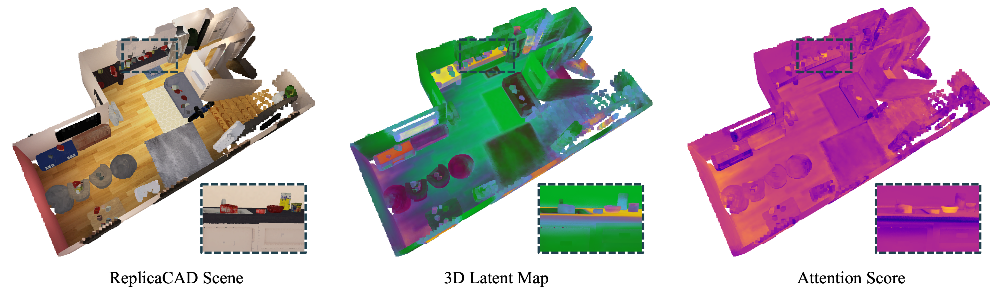
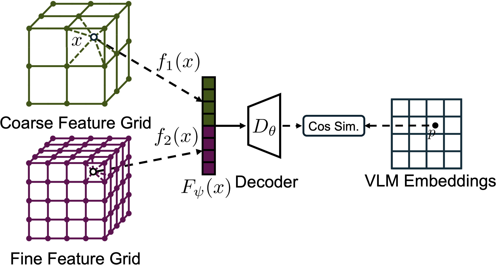
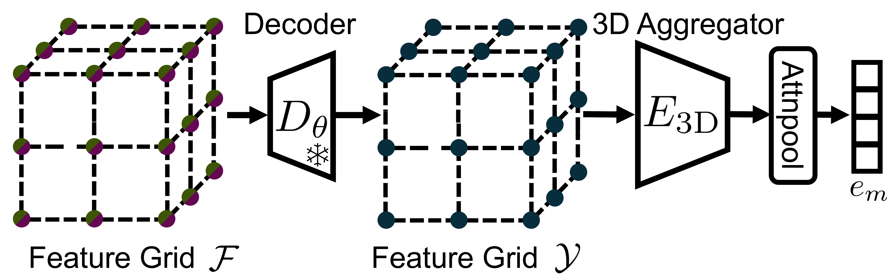

Seeing the Bigger Picture:
3D Latent Mapping for Mobile Manipulation Policy Learning

SBP (Seeing the Bigger Picture) leverages 3D maps as spatiotemporal memory for learning manipulation policies.
Abstract
In this paper, we demonstrate that mobile manipulation policies utilizing a 3D latent map achieve stronger spatial and temporal reasoning than policies relying solely on images. We introduce Seeing the Bigger Picture (SBP), an end-to-end policy learning approach that operates directly on a 3D map of latent features. In SBP, the map extends perception beyond the robot's current field of view and aggregates observations over long horizons. Our mapping approach incrementally fuses multiview observations into a grid of scene-specific latent features. A pre-trained, scene-agnostic decoder reconstructs target embeddings from these features and enables online optimization of the map features during task execution. A policy, trainable with behavior cloning or reinforcement learning, treats the latent map as a state variable and uses global context from the map obtained via a 3D feature aggregator. We evaluate SBP on scene-level mobile manipulation and sequential tabletop manipulation tasks. Our experiments demonstrate that SBP (i) reasons globally over the scene, (ii) leverages the map as long-horizon memory, and (iii) outperforms image-based policies in both in-distribution and novel scenes, e.g., improving the success rate by 15% for the sequential manipulation task.
How it Works
Latent Mapping. We represent the robot's workspace as learnable latent vectors anchored at the vertices of a 3D regular grid that is trained to reconstruct the VLM embeddings (e.g., DINOv2).

Map-conditioned Policy. We aggregate spatially distributed map features into a compact global token using a 3D feature aggregator and use it as an additional state input to policy networks.

Spatial Reasoning
The 3D latent map acts as spatial memory, offering global visibility of object locations and task goals while mitigating occlusions from the current field of view. In mobile manipulation tasks, the target object is often completely outside the robot's initial field of view. Image-based policies fail to localize the object in these settings, producing erratic and inefficient trajectories. In contrast, the map-conditioned policy leverages the latent map to reason globally over the scene, navigating directly toward the target object and completing the task efficiently.
Temporal Reasoning
The 3D latent map also serves as long-term context, enabling the policy to reason beyond short observation windows. In sequential pick-and-place tasks, the robot must pick objects from a cluttered tabletop and place them in a basket in a prescribed order, relying solely on an egocentric camera with limited visibility. With online latent map updates, the map captures temporal changes in the environment, allowing the policy to track the task state and locate objects even after they leave the egocentric view.
Zero-Shot Sim-to-Real Deployment
Video
Acknowledgements
We gratefully acknowledge support from NSF CCF-2402689 (ExpandAI), ONR N00014-23-1-2353, and the Technology Innovation Program (20018112, Development of autonomous manipulation and gripping technology using imitation learning based on visual and tactile sensing) funded by the Ministry of Trade, Industry & Energy (MOTIE), Korea.
Citation
@article{kim2025seeing,
title={Seeing the Bigger Picture: 3D Latent Mapping for Mobile Manipulation Policy Learning},
author={Kim, Sunghwan and Chung, Woojeh and Dai, Zhirui and Bhatt, Dwait and Shukla, Arth and Su, Hao and Tian, Yulun and Atanasov, Nikolay},
booktitle={IEEE International Conference on Robotics and Automation (ICRA)},
year={2026}
}